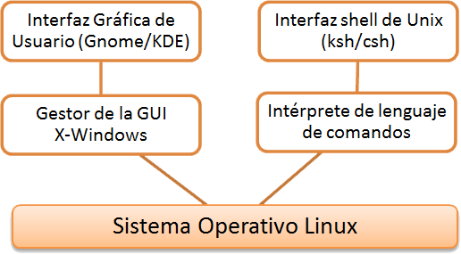
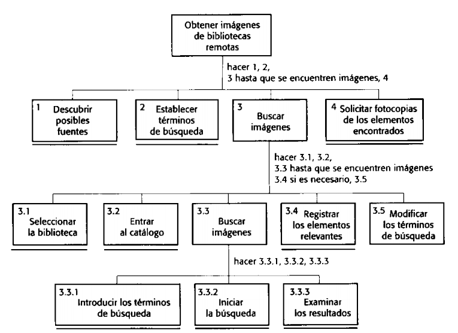

Diseño de Interfaz de Usuario
Conceptos básicos
Created by @edme88
Interfaz de Usuario
Es el medio con que el usuario puede comunicarse con una máquina, equipo, computadora o dispositivo, y comprende todos los puntos de contacto entre el usuario y el equipo.
Incluyen elementos como menús, ventanas, contenido gráfico, cursor, etc.
Interfaz de Usuario
Debe ser diseñada para ajustarse a:
- Habilidad
- Experiencia
- Expectativas
Factores que se deben considerar
Se deben teneren cuenta capacidades físicas y mentales de las personas que utilizarán el software.
- Las personas tienen una memoria limitada a corto plazo
- Cuando el sistema falla, y emite avisos y mensajes genera estrés en el usuario
- Las personas poseen un amplio rango de capacidades físicas
- Las personas poseen diferentes preferencias de interacción
Principios de Diseño
- Familiaridad del usuario: Utilizar términos que el usuario conozca
- Unifomidad: Operaciones comparables se deben activar de la misma forma
- Mínimo Sorpresa: El comportamiento del sistema debe ser esperable
- Recuperabulidad: Mecanismos de recuración de errores
- Guía de Usuario: Retroalimentación significativa frente a errores. Asesoramiento y características.
- Diversidad de Usuarios: Interacción para diferentes tipos de usuario. (Casuales, Potenciales)
Principio de Recuperabilidad
Recursos que le permiten al usuario recuperarse de un error:
- Confirmación de acción destructiva
- Proporcionar un recurso para deshacer
- Generar puntos de control
Interacción del Usuario
La interacción del usuario significa emitir comandos y datos asociados al sistema informático.
En un inicio era sólo a través de lineas de comando
Estilos de Interacción
Según Shneiderman existen 5 estilos de interacción:
- Manipulación Directa
- Selección de menús
- Rellenado de Formularios
- Lenguaje de Comandos
- Lenguaje Natural
Estilos de Interacción
| Estilo de Interacción | Ventajas | Desventajas | Aplicación |
|---|---|---|---|
| Manipulación Directa | Interacción rápida
Intuitiva Fácil de Aprender |
Difícil de Implementar
Sólo adecuada para sistemas visuales |
Videojuegos
Sistemas CAD |
| Selección de menús | Evita errores de usuario
Requiere teclear poco |
Lenta para usuarios experimentados
Compleja si hay muchas opciones |
Sistemas de propósito general |
| Rellenado de Formularios | Introducción de datos sencilla | Ocupa espacio en pantalla
Opciones del usuario no se ajustan a los campos |
Control de Stock
Préstamos personales |
| Lenguaje de Comandos | Poderoso y Flexible | Difícil de aprender
Gestión pobre de errores |
Sistemas operativos
Sistemas de comandos y control |
| Lenguaje Natural | Accesible a usuarios casuales
Fácil de ampliar |
Requiere más tecleo
Los sistemas de comprensión de LN no son fiables |
Sistemas de recuperación de información |
Modelo de Seeheim
Se separa la presentación de la información, la gestión del diálogo y la aplicación.
Es posible tener una interfaz separada para diferentes tipos de usuario.

Presentación de Información
- Presentación directa
- Presentación Gráfica
- 2d
- 3d
- Árboles
- Redes
Pautas de Shneiderman para la utilización efectiva del COLOR
- Limitar el número de colores utilizados y ser conservador en la forma de utilizarlos
- Utilizar un cambio de color para mostrar un cambio en el estado del sistema
- Utilizar el código de colores para apoyar la tarea que los usuarios están tratando de llevar a cabo
- Utilizar el código de colores de una forma consciente y uniforme
- Ser cuidadoso al utilizar pares de colores
Diseño de Mensajes del sistema
Factores a tener en cuenta:
- Contexto: Generar mensajes relacionados con la actividad actual del usuario.
- Experiencia: Proporcionar 2 tipos de mensajes: Cortos y concisos, largos y significativos.
- Nivel de Habilidad: El mensaje se debe adaptar a diferentes clases de usuarios.
- Estilo: Los mensajes deben ser: positivos y activos, fomales, concisos, uniformes y constructivos. Nunca: negativos, pasivos, insultantes.
- Cultura: Adaptado a la cultura del país donde se utilizará el sistema.
Mensajes de error
- Orientado al Usuario
- Orientado al Sistema
Proceso de Diseño de Interfaz de Usuario
Proceso iterativo donde los usuarios interactúan con los diseñadores y prototipados de la interfaz para decidir las características, organización, apariencia y funcionamiento de la interfaz de usurio del sistema.
Proceso de Diseño de Interfaz de Usuario
Actividades para el proceso de Diseño de Interfaz de Usuario:
- Análisis del usuario
- Análisis de Tareas (HTA, tarea de alto nivel dividida en subtareas)
- Estudios Etnográficos
- Entrevistas de Usuarios
- Observaciones
- Prototipado del sistema
- Evaluación de la Interfaz
Análisis Jerárquico de Tareas

Proceso de Diseño de Interfaz de Usuario

Prototipo
Un prototipo es una representación de un sistema, aunque no es un sistema completo, posee las características del sistema final o parte de ellas.
Un prototipo en software es un modelo del comportamiento del sistema que puede ser usado para entenderlo completamente o ciertos aspectos de él y así clarificar los requerimientos.
Prototipado
Ventajas:
- Permite mostrar al usuario el sistema y recibir un feedback temprano
- Método intuitivo para identificar características y requerimientos
Proceso de Prototipado de la IU
- Prototipo en papel: Maquetas de los diseños de pantalla
- Prototipo Automatizado: Permite al usuario realizar pruebas y simulación
Técnicas para Prototipado
- Enfoque dirigido por secuencias de comandos
- Lenguaje de Programación Visual
- Prototipado basado en Internet
Evaluación de la Interfaz
Proceso de evaluar la forma en que se utiliza una interfaz y verificar que cumple los requerimientos del usuario.
Es parte del proceso de verificación y validación de los sistemas software.
Atributos de Usabilidad
- Aprendizaje: Tiempo que tarda un usuario nuevo en ser productivo con el sistema
- Velocidad de Funcionamiento: Respuesta del sistema a las operaciones de trabajo del usuario
- Robustez: Tolerancia del sistema a errores de usuario.
- Recuperación: Cómo se recupera el sistema a los errores del usuario
- Adaptación: El sistema se adapta a único modelo de trabajo
Técnicas de Evaluación de la Interfaz
- Cuestionarios de la opinión de los usuarios sobre la interfaz
- Observación de los usuarios cuando usan el sistema
- Videos del uso típico del sistema
- Incluir código en el software que recopila información de los recursos utilizados y errores comunes